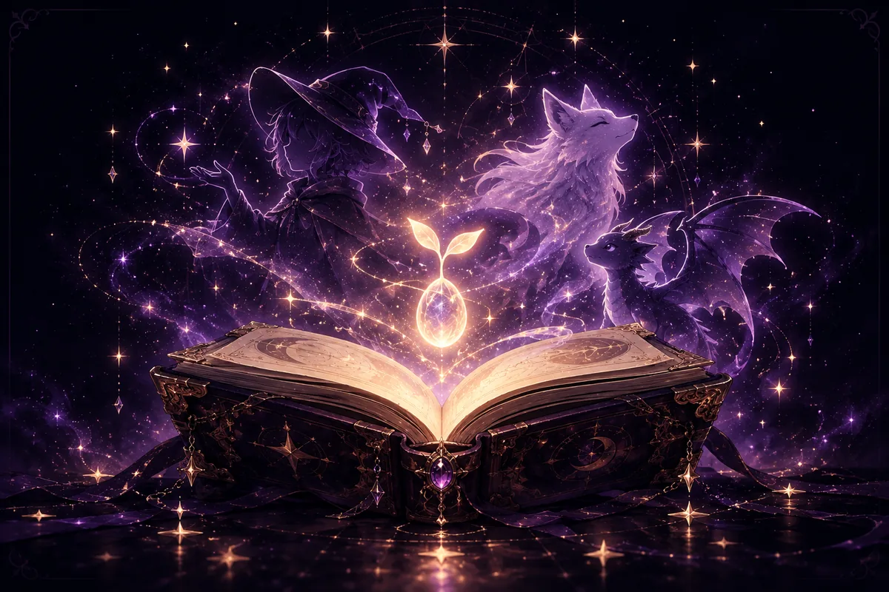
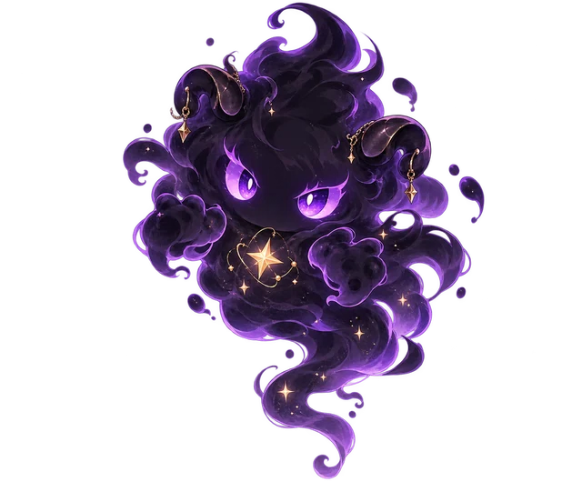
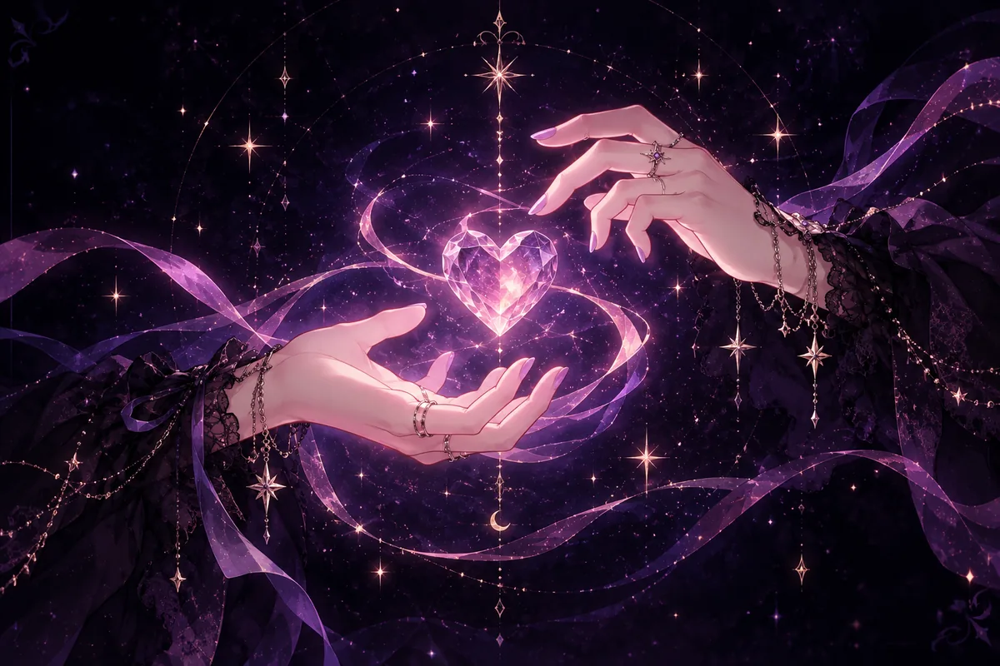
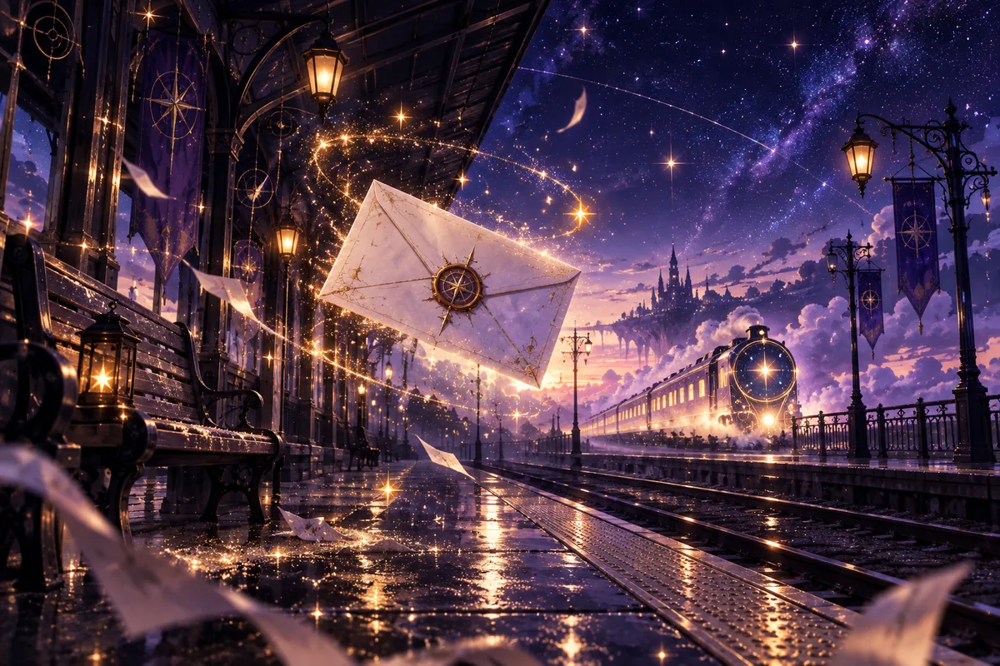
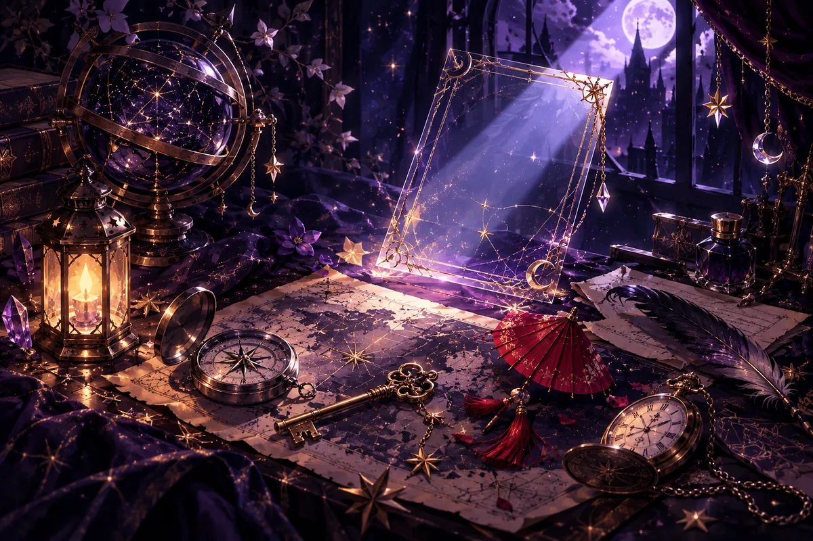
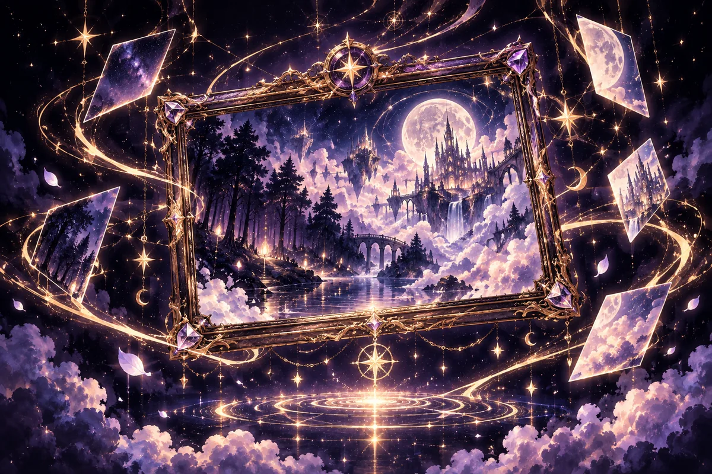

0 / 5クエスト
30 MIN CREATIVE JOURNEY
頭の中の世界を、
最初の1枚へ。
5つの問いに答えると、画像生成AIへそのまま渡せる「あなたの生成文」が完成します。正解はありません。アイリスと一緒に、好きな言葉を拾っていきましょう。
- 01無料・登録不要
- 02迷ったら候補から選べる
- 03答えはこの端末に自動保存
入力した内容は外部へ送信されません。このブラウザ内だけに保存されます。
 ✦
✦GUIDE / アイリス
ようこそ。今日は、あなたの頭の中にある景色を一緒に見つけよう。
ENEMYぼんやりの霧


主人公の核を見つける
アイリスから3つの候補1 / 4
QUEST COMPLETE
YOUR WORLD IS READY
あなたの世界が、
ひとつの生成文になりました。
このまま画像生成AIに貼り付けても、好きな言葉へ書き換えても大丈夫。作品を決めるのは、最後まであなたです。
THE FIVE FRAGMENTS
旅で集めた、5つの景色。



